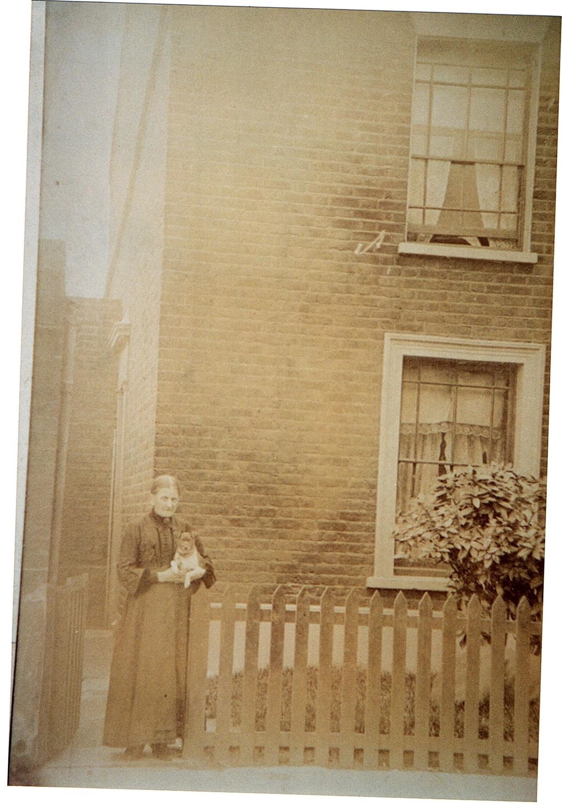
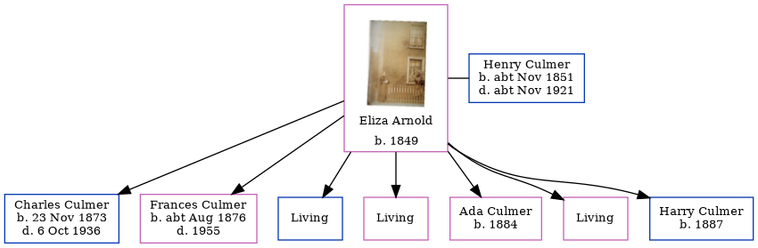

Eliza Culmer (née Arnold) 1849 -
[ Home ] | [ Calendar ] | [ Surnames Index ] | [ Family History ]Eliza Arnold, the wife of Henry Culmer (the great-great-uncle of Nigel Horne), was born in Preston, Kent, England in 18491 and married Henry (a coal carman with whom she had 7 children: Charles James, Frances Susannah, Percy Frederick, Mary Jane, Ada, Sarah Eleanor and Harry, along with 3 surviving children) at St Mildred's Church, Preston, Wingham, Kent, England on Apr 6, 18722.
Throughout her life, she lived in Westmarsh, Kent, England on Apr 5, 18913; and on Albert Road, Woolwich, London, England on Mar 31, 19011.
Children
- Charles James was born on Nov 23, 1873
- Frances Susannah was born c. Aug 1876
- Ada was born in 1884
- Harry was born in 1887
Citations
- 1901 England, Wales & Scotland Census - Findmypast (was age 52 and the wife of the head of the household)
- Kent, Canterbury Archdeaconry Marriages - Findmypast
- 1891 England, Wales & Scotland Census - Findmypast (was age 41 and the wife of the head of the household)
Media
Eliza Arnold

1911 Census for England & Wales - GBC/1911/RG14/02883/0753/1
Family Tree

Interactive Map
Map
Generated by ged2site. Last updated on Feb 18, 2025